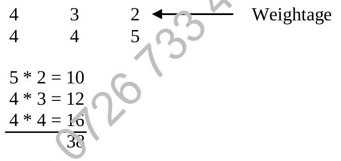

Chapter 11 : Errors And Accuracy
Chapter Objectives
At the completion of this chapter, you should be able to:
- identify different types of errors;
- calculate absolute and relative error;
- estimate maximum absolute error;
- generate check digit.
11.1 Introduction
In building a system, measures must be taken against possible human mistakes. Procedures must be set up to help people to detect any mistakes. The role of data preparation or data entry are prone to errors, therefore they must not be overlooked as the ill effect may affect the entire system seriously.
11.2 Mistakes
At the man/machine interface, i.e. when a person wants to enter data into a computer system, the common mistakes are:
- Lose track of the source documents.
- Enter data wrongly.
- Invalid datatype. e.g. enter alphabets instead of numeric data.
- Out of the valid data range. e.g. enter 102 while the valid range is 1 to 100.
- Transposition of characters. e.g. enter 23322 while the actual data is 23223.
- Interference in data transmission from a remote site. e.g. 00100101 is transmitted along a cable and on the way due to voltage surge, the data becomes 10100101.
- and many more.
Mistakes are due to human carelessness.
Parity bit check.
Example:
If 'B' is represented as 1000010, we can use even parity conversion to produce a parity bit.
IF odd number of 1's THEN
parity bit ← 1
ELSE
parity bit ← 0
ENDIFThe parity bit may be appended to the left of the 1000010. 'B' is represented as 01000010. Suppose the data is received as 01100010, there are three 1's which should give 1 in the parity bit, then the mistake is detected.
Check digit method.
- A Check digit is derived from the true data before transmission, which is then appended to the right of the true data for validation.
Step 1: A true data 445, each of the digits is assigned a weight,
Step 2: The sum of (digit * weight) = (4*4) + (4*3) + (5*2) = 16 + 12 + 10 = 38. The sum of 38 is to be divided by a modulus.
(In this example, 11 is used as it can detect most of the mistakes).
38 / 11 gives quotient 3 and the remainder 5.
Step 3: Remainder 5 is subtracted from the modulus (11) to obtain the check digit '6'.
11 - 5 = 6
Step 4: The check digit can be appended to the right of 445, to give 4456, which could be validated.
In order to verify the correctness of 4456, we could just multiply 4456 by the set of weight, 6 is assigned the weight of 1,
Weights: 4 3 2 1
Data: 4 4 5 6
Sum = (4*4) + (4*3) + (5*2) + (6*1) = 16 + 12 + 10 + 6 = 4444 is divisible by 11, thus conclude that 4456 is received correctly.
It has been tested that MOD 11 is most efficient in detecting mistakes, reason being 11 is a prime number. Though bigger number is better, the small increase in efficiency is overwhelmed by large increase in processing.
Check point
- List five types of mistakes which may occur during the data preparation and data entry stages of the processing cycle.
- Give one other example each of the appropriate use of the hash and batch totals. Describe the principle of a parity check and how even and odd parity differ.
- Using mod 7 and weighting 2,3,4,5..., append appropriate check digits to:
- 439
- 1058535
- Using the same mod 7, determine whether the following are valid:
- 1794
- 10545722
11.3 Errors
11.3.1 Inherent Error
It is error that already exist by itself in the measurement scale. E.g. Take a ruler of measurement, though there are many small divisions, there is still the smallest division that is not sub-divided further. Thus there is uncertainty in reading the length as mentioned above.
If the length fall between 5.1 cm and 5.2 cm, the smallest division is 0.1 cm, then the reported reading may be 5.15 cm and the inherent error is 0.05 cm.
11.3.2 Induced Error
It is the error which is brought in from 'outside' due to external factors.
Example: In a fixed point 8-bit register in computer, the implied point is to the right of 5 bits.
If a data 1010.01110 is to be stored, rounding or truncation is necessary.
Rounding the above data is stored as:
0 1 0 1 0 | 1 0 0(Original: 10.4375, Rounded: 10.5)
Thus the error is brought in due to the limitation of computer.
Check point
- What is the difference between error and mistakes?
11.4 Measurement of Error
Absolute error
- If a true value 2.5 is reported to be 3 (round to full number) an error of 0.5 is induced. This error is called the absolute error.
- Absolute error $E_a = | \text{reported value} - \text{true value} |$
- | | means the absolute value is taken, the sign is not considered at all.
Relative error
- Another more meaningful measurement of error is relative error, because it expresses the absolute error as a proportion of the true value (if the true value is not available, the reported value is used.)
- $E_r = \frac{| \text{absolute error} |}{| \text{True Value} |}$
- $E_r (\%) = \frac{| \text{absolute error} |}{| \text{True Value} |} \times 100\%$
Maximum relative error between any two values reported as R:
Example: 3.6 is rounded to 1D. The true value lies between 3.55 and 3.65. Error bound = (3.65 - 3.55) / 2 = 0.05. Maximum relative error = $100 \times (0.05 / 3.6) \approx 1.39\%$
Check point
- What is the error bound of the value reported as:
- 3.5 cm
- 45.3 seconds
- Calculate the maximum relative error on:
- 13.5
- 130.5
- 1300.5
11.5 Error Propagation
Inherent errors in data values, may produce further errors as they are operated on arithmetically, these errors may be termed as Induced errors. This spread of errors is called the Error Propagation.
Addition
Example: 5 + 7, each of the data values are rounded to whole number.
Max value = 5.5 + 7.5 = 13
Min value = 4.5 + 6.5 = 11
Reported sum = 5 + 7 = 12. Error bound = (13 - 11) / 2 = 1.
Absolute error of sum $E_a(A+B) = E_a(A) + E_a(B) = 0.5 + 0.5 = 1$
Relative error of sum $E_r = 100 \times (1 / 12) \approx 8.33\%$
Relative error of 5 = $100 \times (0.5 / 5) = 10\%$
Relative error of 7 = $100 \times (0.5 / 7) \approx 7.1\%$
You may try 13 + 6, a conclusion may be derived.
Conclusion: Relative error of the sum is between the relative error of the individual reported values.
Subtraction
Example: 8 - 4, each rounded to whole number.
Max value = 8.5 - 3.5 = 5
Min value = 7.5 - 4.5 = 3
Reported difference = 8 - 4 = 4. Error bound = (5 - 3) / 2 = 1.
Absolute error of difference $E_a(A-B) = E_a(A) + E_a(B) = 0.5 + 0.5 = 1$
Relative error of difference $E_r = 100 \times (1 / 4) = 25\%$
Relative error of 8 = $100 \times (0.5 / 8) = 6.25\%$
Relative error of 4 = $100 \times (0.5 / 4) = 12.5\%$
You may try 3 - 2
Conclusion: Relative error of the subtraction can be significantly larger than the relative errors of the individual reported values, especially when subtracting numbers that are close in value.
Multiplication
Example: 3 * 4 * 5, each rounded to whole number. Reported product = 60.
Max value = 3.5 * 4.5 * 5.5 = 86.625
Min value = 2.5 * 3.5 * 4.5 = 39.375
Error bound = (86.625 - 39.375) / 2 = 47.25 / 2 = 23.625
This error bound is very big indeed, and it is not symmetrical about 60 (the result of multiplying 3, 4 and 5). If we quantify the relative error, it would be as follow:
Take half of the error bound,
Relative error of product $E_r \approx 100 \times (23.625 / 60) \approx 39.375\%$
Relative error of 3 = $100 \times (0.5 / 3) \approx 16.667\%$
Relative error of 4 = $100 \times (0.5 / 4) = 12.5\%$
Relative error of 5 = $100 \times (0.5 / 5) = 10\%$